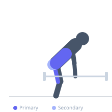

Exercise guide / Stiff-Leg Deadlift
Stiff-Leg Deadlift
The stiff-leg deadlift is a hip-hinge movement performed with the knees kept nearly fully extended throughout. Unlike the Romanian deadlift — which maintains a consistent slight knee bend — the stiff-leg deadlift allows the bar to travel to the floor, requiring greater lumbar flexion and placing an extreme stretch on the hamstrings. It delivers a powerful hamstring and erector spinae stimulus but demands significant flexibility and careful attention to spinal position.
Primary muscles
biceps femoris long head
semitendinosus
semimembranosus
iliocostalis
longissimus
Secondary muscles
gluteus maximus
Stabilizers
transverse abdominis
Equipment
Standard Barbell
Optional
Lifting Straps


Starting position
- Stand with the barbell on the floor in front of you, feet hip-width apart. Grip the bar with both hands just outside the legs.
Setup
- Use a double overhand grip or mixed grip. Lifting straps are appropriate for heavier loads as grip will be a limiting factor at extreme hamstring stretch positions.
Steps
- Step 1: With knees nearly fully extended (a micro-bend only), hinge forward from the hips and grip the bar.
- Step 2: Brace the core and maintain a neutral or slightly extended spine as you lift the bar from the floor to standing.
- Step 3: To begin the descent: push the hips back and hinge forward, keeping the knees straight, allowing the bar to travel down the legs.
- Step 4: Lower the bar toward or to the floor, allowing the lower back to round slightly at the extreme bottom position if flexibility demands it. The key is a controlled, progressive range.
- Step 5: Return to standing by driving the hips forward.
Coaching cues
- Slight knee bend throughout — never lock the knees
- Bar stays close to the legs on the way down
- Feel the stretch — don't let the low back take over
Breathing
- Inhale and brace before descent. Hold through the stretch. Exhale as you return to standing.
Range of motion
- Lower the bar until hamstring flexibility limits further range or the bar touches the floor, whichever comes first while maintaining acceptable spinal position.
Tempo
- 3-1-1-0 — a slow controlled descent to maximize the hamstring stimulus
Common mistakes
- Fully locking the knees (hyperextending) — a micro-bend protects the posterior joint
- Losing control of the lower back rounding too early in the range (should occur only near the floor)
- Rounding the upper back significantly, transferring excessive load to the spine
Safety
- This exercise is not appropriate for those with insufficient hamstring flexibility — the Romanian deadlift is a safer alternative
- Use moderate loads — the extreme stretch position is mechanically disadvantaged and high-risk under heavy load
Training
- strength: 5–8 reps
- hypertrophy: 8–15 reps
- endurance: 15–20 reps
- strength: 3–4 sets
- hypertrophy: 3–4 sets
- endurance: 2–3 sets
- Rest: {'strength': 180, 'hypertrophy': 90, 'endurance': 60}